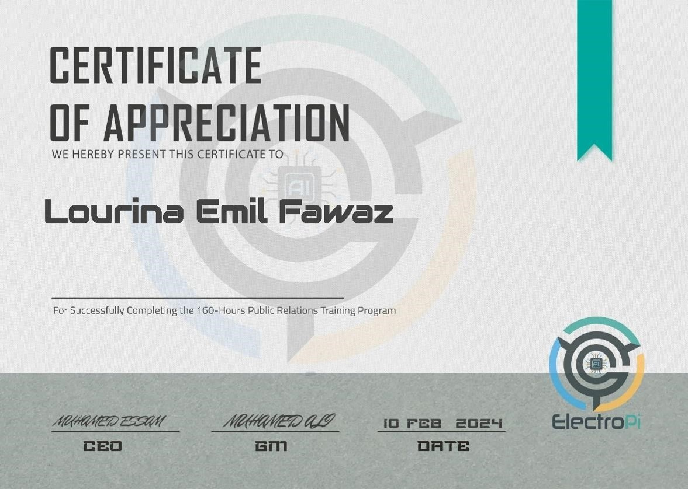

Public Relations Internship:
- Interned at Electro Pi as a Public Relations member.
- Recognized by Electro Pi's CEO for strong negotiation skills during an activity at Giza Systems
- Secured partnerships and negotiated a 35,000 EGP sponsorship deal for Electro Pi
- Contributed significantly to Electro Pi's HubSpot platform by diligently adding contacts and companies
- Received mentorship and training from professionals within the company, including the sales manager and public relations specialists.
- Demonstrated ability to excel in professional environments as an intern.
- Received a recommendation letter from CEO
Pictures

